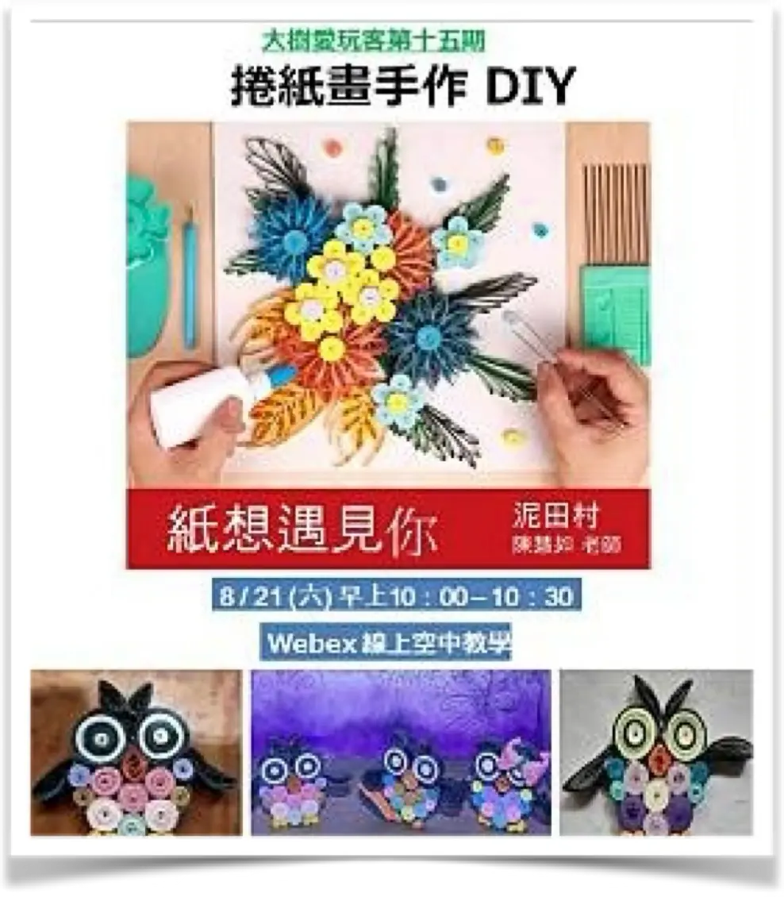
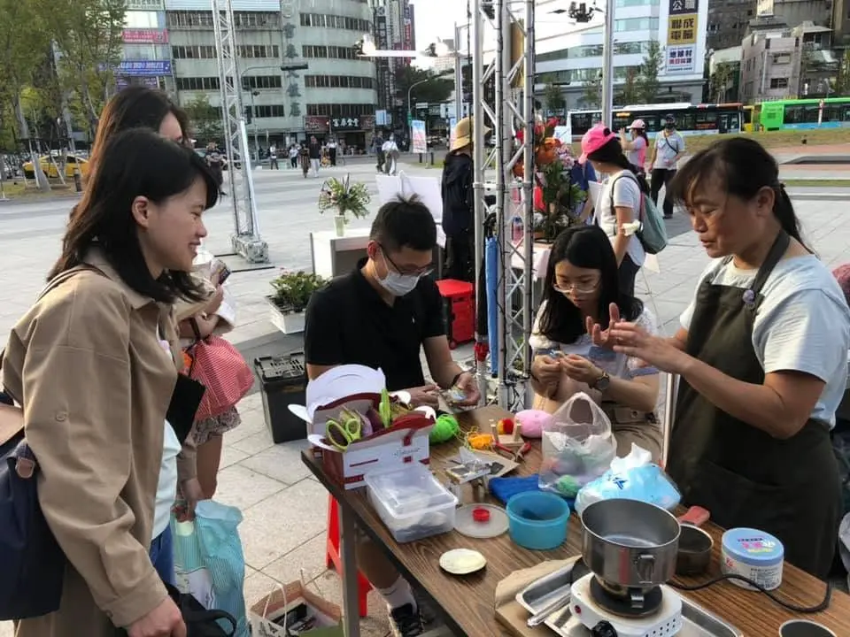
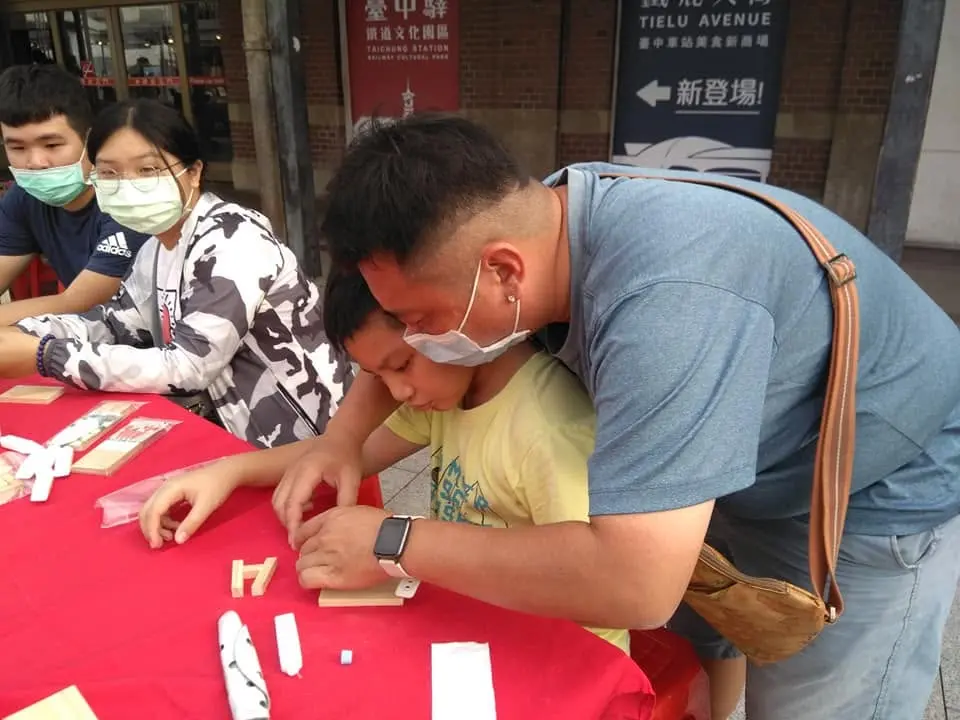
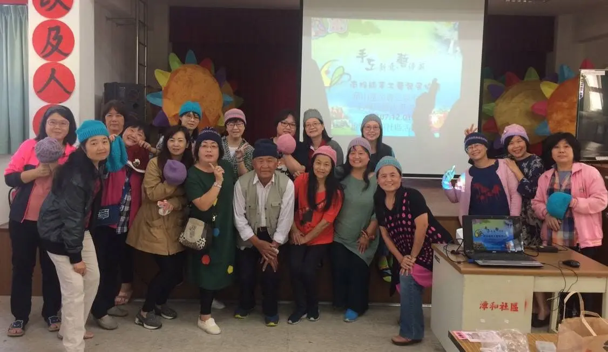
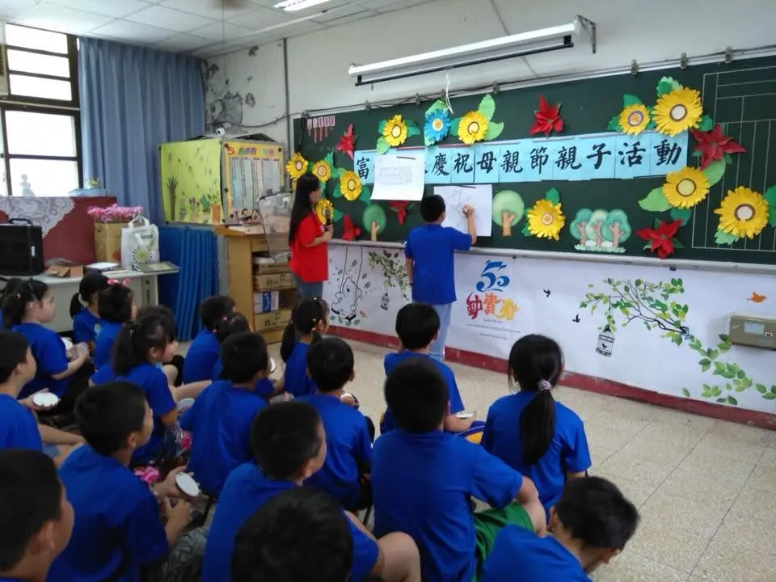
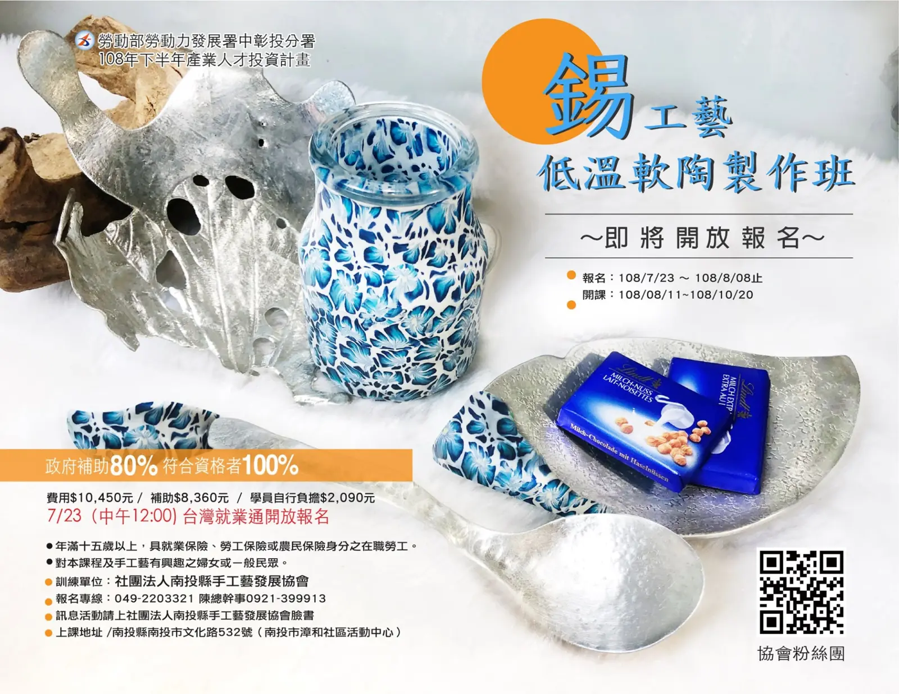
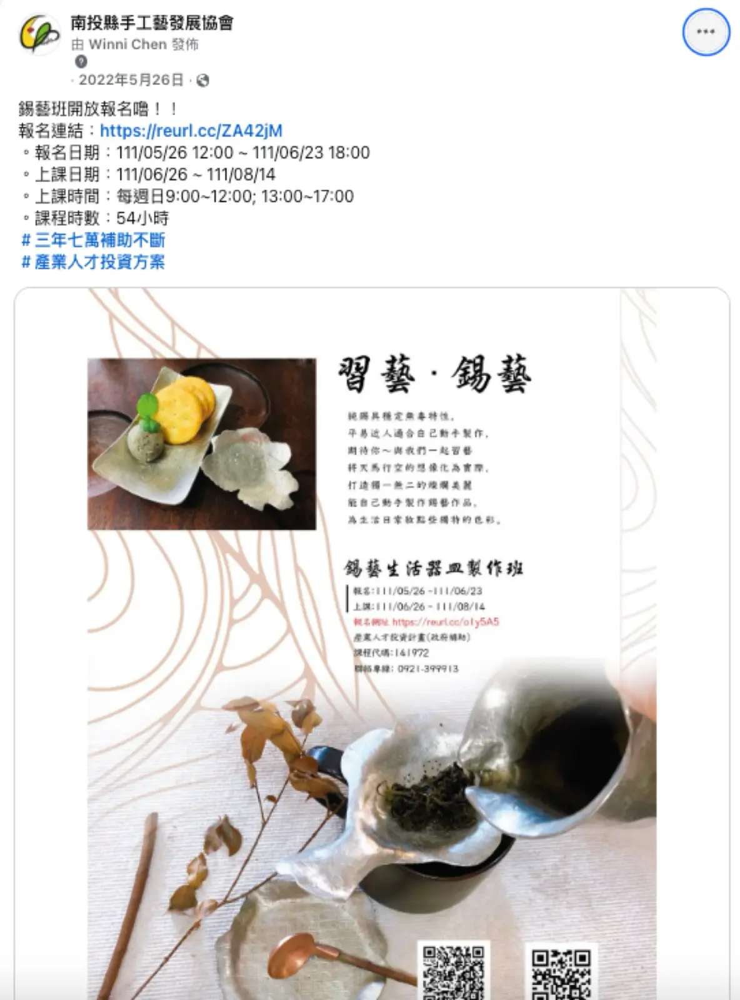

線上手作教學
運用線上平台推廣捲紙畫等手作課程，拓展文化教育與數位學習的參與方式。
圍繞宗旨任務，協會規劃多元推廣項目，串連學習、休閒、社教與公益，陪伴不同年齡層走進手工藝的世界。
毛線編織、染布、金屬工藝、複合媒材...等基礎與進階課程，培養在地工藝人才。
邀請工藝職人與在地創作者分享經驗，促進跨領域對話與觀摩。
受託辦理工藝推廣公益活動，將技藝帶入社區角落。
關懷幼兒、兒童與家庭，設計適合親子共學的手作體驗。
協助教保服務人員增能研習，將工藝融入教學現場。
配合政府社教政策辦理專業技能訓練，銜接生活與職能發展。




協會持續透過實體課程、線上教學與職能培訓，讓不同族群都能接觸手工藝，並累積可延伸運用的專業技能。

運用線上平台推廣捲紙畫等手作課程，拓展文化教育與數位學習的參與方式。

配合產業人才投資計畫辦理錫工藝等專業課程，支持學員發展第二專長。

以完整課程時數規劃錫藝生活器皿等培訓內容，陪伴學員從基礎學習進入專業實作。